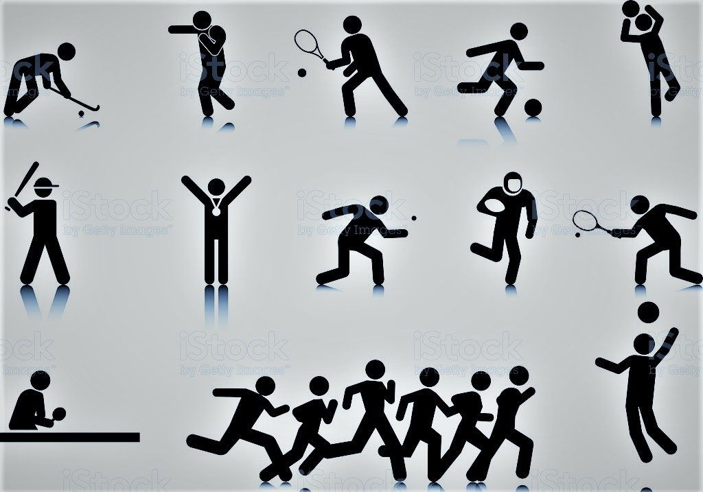
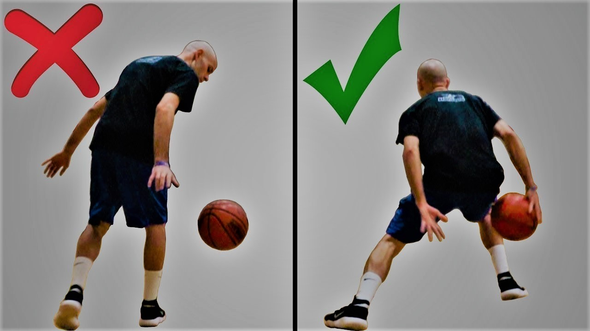
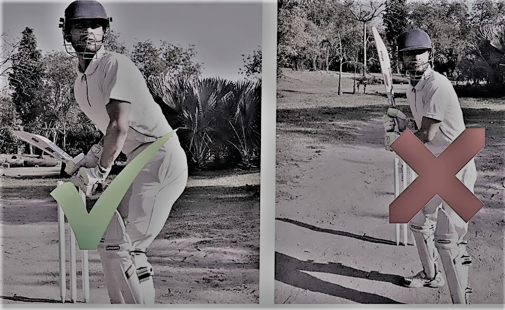

Home
Videos
About us

Football
Poor posture can lead to
knee injuries
ligament tear
To maintain correct posture
Regolar warm-up and stretching regimens
Practicing daily

Basket Ball
Poor posture can lead to
Ankle and knee injury, followed by the lower back, hand, and wrist.
Body part injured
To maintain correct posture
Warm up and stretch before playing
Cool down and stretch after playing
Volley Ball
Poor posture can lead to
Injuries to the fingers, hands, and wrists
Dislocations, sprains, and tears
To maintain correct posture
before and after every practice or game adequately warm up and cooldown your muscles

Cricket
Poor posture can lead to
Hamstring strain, Lumbar stress fractures
Side strains
Knee ligament injuries
To maintain correct posture
Warmup and Cooldown
strenghting the core